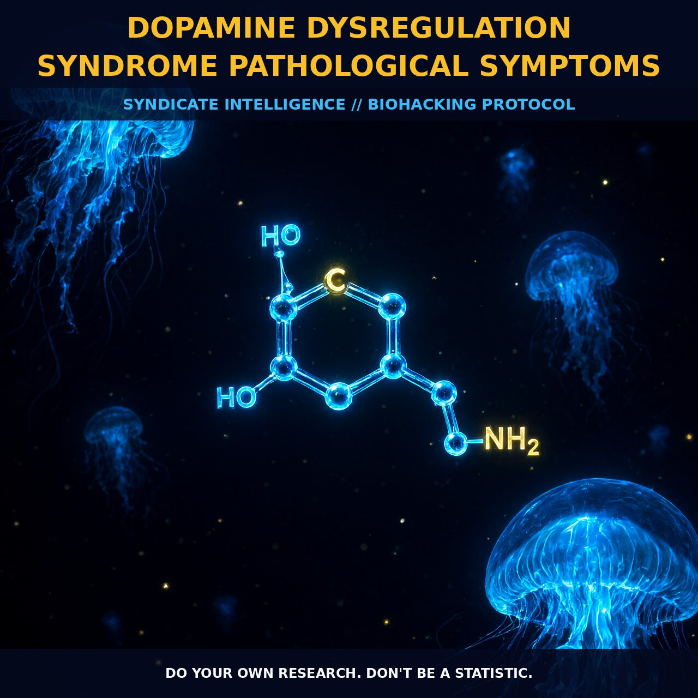

Dopamine Dysregulation Syndrome: Balancing The Inverted-U Curve

1. Mechanism: The Dopamine Tightrope
Dopamine is the primary neuromodulator within the catecholamine and phenethylamine families, orchestrating a complex triad of reward processing, motivation, and motor control. Its biochemistry is rooted in a rigorous synthesis pathway: phenylalanine converts to tyrosine, then to DOPA, and finally to dopamine—a precursor that further branches into noradrenaline and adrenaline. This tight biochemical chain ensures that precursor availability directly influences the pool of available neurotransmitters, establishing a foundational baseline for neural signaling efficiency across both the central nervous system and peripheral tissues.
However, this system is exquisitely sensitive to dosage extremes. Excessively high levels of dopamine can disrupt normal function, leading to Dopamine Dysregulation Syndrome (DDS). This condition manifests as an addictive pattern in the use of dopamine replacement therapy, where doses exceed physiological requirements. The syndrome represents a systemic imbalance involving the brain's reward circuits, motor pathways, and hormonal axes, creating a state where natural feedback loops are overwhelmed by continuous dopaminergic stimulation.
The clinical presentation extends beyond simple overstimulation to include compulsive behaviors such as pathological gambling, hypersexuality, and compulsion-driven eating. These symptoms arise because overstressed dopamine systems fail to differentiate between natural reward signals and artificial pharmacological input, causing the brain to interpret elevated levels as a persistent need for acquisition. This creates a self-perpetuating loop where individuals seek further dopamine-boosting stimuli, deepening the dysregulation rather than resolving it.
2. Biological Leverage: Precision Over Quantity
The biological leverage of dopamine lies in its dual role as both a driver of motivated behavior and a regulator of motor function, mediated primarily through D1 receptor pathways in the prefrontal cortex. Research indicates that D1 receptors exhibit an inverted-U dose-response curve on prefrontal neurons engaged in working memory. This means that both too little and too much dopamine can impair cognitive performance; optimal levels, conversely, support clarity and drive. Simple dopamine boosting is not always superior—precision is key.
Furthermore, the brain utilizes an endogenous regulatory mechanism via monoamine oxidase B (MAO-B), an enzyme responsible for degrading excess dopamine and maintaining neural homeostasis. When MAO-B activity is balanced, it effectively clears surplus neurotransmitters, preventing levels from climbing too high. A deficiency allows dopamine to accumulate, while excessive MAO-B can cause levels to tank, leading to withdrawal and anhedonia. This enzymatic control point provides a critical lever for managing DDS, suggesting that modulating the breakdown rate is just as important as controlling synthesis or exogenous intake.
The connection between dopamine levels and psychological states highlights the fine line between optimal function and pathology. High levels often correlate with aggression and paranoia, particularly in Parkinson’s patients on excessive L-DOPA. This suggests that DDS is a spectrum determined by the ratio of dopamine to its degrading enzymes, allowing for targeted interventions that stabilize receptor activity and enzyme function.
3. Tactical Implementation: Monitoring the Loop
To manage the risk of DDS, one must monitor behavioral markers closely, particularly looking for signs of compulsive escalation in reward-driven activities such as gambling, sexual behavior, and food intake. Since the syndrome is often iatrogenic and linked to excessive dopamine replacement therapy, regular assessment of dosage levels relative to symptom severity is crucial.
Individuals should aim to avoid pushing their dopaminergic systems into high-overdrive states by adhering to dose-response principles that prioritize stability over maximal stimulation. By utilizing the inverted-U curve of D1 receptor activity effectively, biohackers can optimize working memory and motor control without tipping into pathology.
Prostar Life Hack
Monitor your MAO-B activity. Do not just boost dopamine; support its degradation. Incorporate dietary factors that enhance natural enzymatic cleanup to prevent accumulation, ensuring your dopaminergic tone remains high enough for drive but low enough to avoid the aggressive, compulsive spiral of DDS.
Prostar Life Hack
Do not just boost dopamine; support its degradation. Incorporate dietary factors that enhance natural enzymatic cleanup (MAO-B) to prevent accumulation, ensuring your dopaminergic tone remains high enough for drive but low enough to avoid the aggressive, compulsive spiral of DDS.
[ AUTHOR: LEAD TECHNICAL RESEARCHER ]